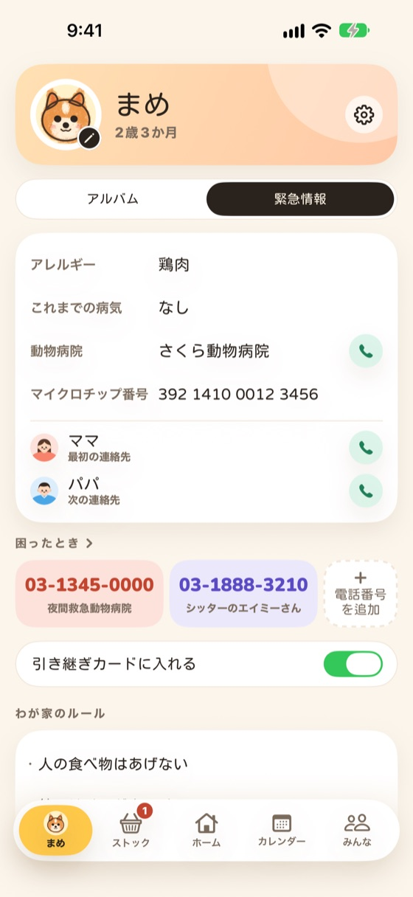
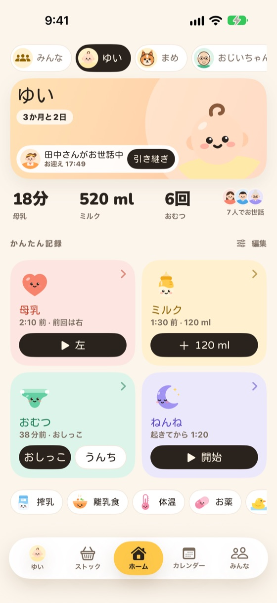
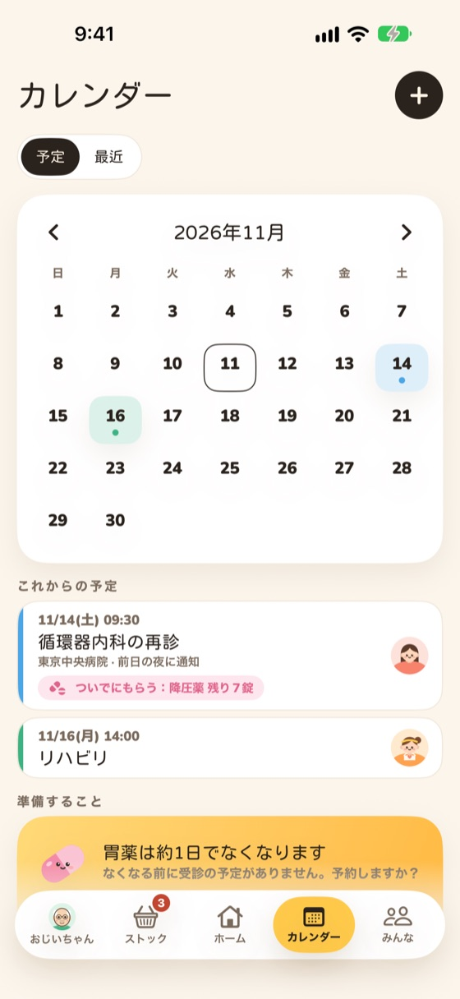
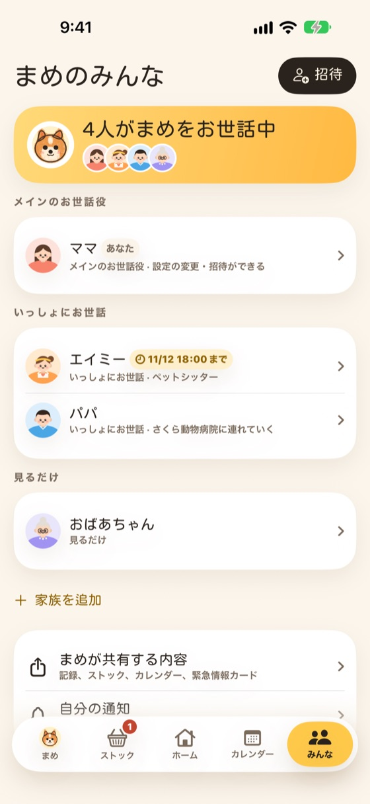

せわとも
せわともワンタップで記録
何を記録するかは自由。ごはん、散歩、お薬、体温など、ホームの大きなカードをタップするだけ。タイマーで計ることもでき、計測中でも開始時刻を直せます。
赤ちゃんもペットも高齢の家族も、誰がお世話していてもワンタップで記録。交代のときは引き継ぎカードを送るだけで、一緒にお世話する人みんなに今日の様子が伝わります。



ワンタップで記録して、交代のときはカードを1枚。一緒にお世話する人みんなが同じ日記を見られます。赤ちゃん、犬・猫、高齢の家族のほか、魚・アクア、植物、爬虫類、鳥、昆虫、うさぎ・ハムスター、馬・ヒツジも記録できます。選ぶと、よく記録することが最初からチェックされています。
何を記録するかは自由。ごはん、散歩、お薬、体温など、ホームの大きなカードをタップするだけ。タイマーで計ることもでき、計測中でも開始時刻を直せます。
この間にしたことに、ひとことと写真を添えてLINEで送れます。受け取る人はアプリがなくても見られます。
7日間か30日間のタイムライン。1日1列でひと目でわかり、日をタップすると一覧が開きます。
アレルギー、既往歴、かかりつけの病院、最初に連絡する人を引き継ぎと一緒に。困ったときの電話番号は自分で追加でき、はじめて人に頼むときのチェックリストもあります。
通院、予防接種、トリミングの予定をまとめて、誰が連れて行くか、前日のお知らせも。おむつ、フード、お薬が残り少なくなったら、買う係の人にお知らせします。
月ごとに分かれていて、シールやマスキングテープ、スタンプ、手書きの文字を加えられます。1か月分やアルバム全体を、ページをめくる動画にしてシェアできます。
自分でお世話する相手2人までは無料で、見るだけの人を1人招待できます。もっと多くの相手や、もっと多くの人と一緒に記録するなら Pro に。ひとつの契約でみんなが使えて、招待された人の支払いはいりません。

「家族」の「招待」をタップし、メインのお世話役、いっしょにお世話、見るだけのどれにするかと、必要なら期限を選びます。相手がカメラでQRコードを読み取り、両方に同じ4桁の数字が出たら確認するだけで、2台の記録がひとつになります。見るだけの人1人までは無料、それ以外は Pro で、招待された人の支払いはいりません。
いいえ。引き継ぎカードは1枚の画像なので、LINEやメッセージなどで送れば、そのまま見られます。
記録した直後なら元に戻せます。あとからでも「最近」でその日をタップし、記録をタップすると直せて、長押しすると削除できます。削除しても元に戻せます。
計測中も終了時も、開始と終了の時刻を直せます。タイマーが長く続いているときは、アプリを開いたときに「まだ続いていますか？」とお聞きします。
いいえ。このアプリは記録と共有のためのもので、判定やほかとの比較はしません。体の具合は医師や獣医師に相談してください。
このアプリはいろいろな国で配信していて、地域ごとに番号が違うためです。病院、動物病院、薬局、救急など、よく使う番号を自分で追加して並べ替えられます。上の3件は緊急情報カードにも出ます。
記録、写真、動画はこのiPhoneの中だけにあり、クラウドには保存しません。機種変更のときは、古いiPhoneで「設定」>「機種変更とバックアップ」>「新しいiPhoneに移す」を開き、新しいiPhoneでQRコードを読み取るだけです。古いiPhoneが手元にない場合は、先にパスワード付きのバックアップを作って、新しいiPhoneで復元します。機種変更もバックアップも無料です。
「iPhoneのカレンダーにも追加」をオンにしている場合は、先にアプリの設定でオフにしてください。カレンダーの予定も一緒に片付きます。オフにしないと予定がカレンダーアプリに残ります（この予定にはアラームがないので鳴りません）。通知、ライブアクティビティ、ウィジェットはアプリと一緒に消えます。記録はこのiPhoneの中だけにあり、削除すると消えるので、必要ならバックアップを作るかCSVで書き出しておいてください。
いいえ。アプリを削除してもサブスクリプションは解約されません。iPhone の「設定」>［ユーザ名］>「サブスクリプション」から解約してください。
解約：iPhone の「設定」>［ユーザ名］>「サブスクリプション」、またはアプリの Pro の画面からサブスクリプションの管理を開きます。今の期間が終わるまで Pro を使えて、記録はそのまま残ります。
返金は Apple が対応します。reportaproblem.apple.com から申請できます。
復元：機種変更や再インストールのあとは、Pro の画面で「購入を復元」を押してください。
通常、数日以内にお返事します。iPhone の機種と iOS のバージョンを添えてください。記録を送っていただく必要はありません。
このアプリはお世話の記録と共有のためのもので、医療機器ではなく、診断や治療は行いません。緊急のときは、すぐにお住まいの地域の救急番号に電話してください。